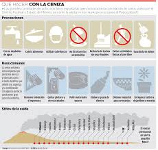

No humedecer la ceniza a fin de evitar taponamientos en el sistema
de alcantarillado
Mantén la calma.
Utiliza medios electrónicos y de comunicación para obtener información confiable que den las autoridades de Protección Civil sobre la caída de ceniza y
atiende siempre sus instrucciones.
No realices actividades al aire libre y si es posible no salgas.
Cierra puertas y ventanas y coloca toallas o trapos húmedos en las rendijas.
Si tienes que salir cúbrete con un pañuelo o tapabocas, limpia ojos y garganta
con agua pura.
Para los ojos, usa lentes protectores, especialmente si usas lentes de contacto.
Ten a la mano una linterna y pilas.
La ceniza volcánica puede ser resbaladiza, sobre todo cuando está mojada.
Toma las precauciones necesarias.
Cubre tinacos, cisternas y depósitos de agua.
Barre y retira la ceniza de techos, azoteas, patios y calles, deposítalas
en bolsas y no permitas que se vaya al drenaje.
Si es posible no conduzcas, si tienes que hacerlo, hazlo a baja velocidad
y con las luces encendidas, ya que la ceniza dificulta la visibilidad y provoca
que el pavimento se vuelva resbaloso.
Ante la caída de ceniza volcánica evita consumir alimentos en la vía pública.
Si permaneces expuesto por algún tiempo a las cenizas volcánicas, al ingresar a
tu casa se recomienda cambiar de ropa.
Durante la caída de ceniza volcánica, evita que los menores realicen actividades
al aire libre.
Mantén a tus mascotas en un lugar techado al igual que sus alimentos. Si tus macotas salen, cepíllalos antes de permitirles la entrada nuevamente.
La ceniza puede ser usada para parques, jardines, macetas o tierras de cultivo,
ya que es rica en minerales.
No repitas ni difundas rumores. La ciudad de Puebla se encuentra a una distancia segura,
no intentes salir.
Usa las vías de comunicación solo en caso de ser necesario.
